Crochet
If you like to work with yarn but find knitting a few too many needles, then a crochet hook will gladly help you along. Crocheting is all about making slip knots and weaving togeher yarn. Unlike some other kinds of manu=ipulating yarn, crocheting is relatively new, and only dates to the 1800's. But that doesn't mean there's a lack of patterns.
Learn to Crochet
How to Crochet for Absolute Beginners
This video is perfect for anyone who is an absolute beginner. You do not have to know anything in order to begin this. All you need is any hook, any yarn, and SimplyDaisy will set you up with the rest! The slip knot, single crochet, and chains are among the most basic stitches, and after this video you too can be a pro. There is also a part 2 that teaches some more stitches available on her channel.
Learning Resources:
- SimplyDaisy from YouTube
20+ Crochet Hacks for Beginners
TL Yarn Crafts founder, Toni Lipsey, has over 20 years experience designing patterns and working with yarn. In this video, she goes over some of the things that beginners might not know, but should, since they are very helpful. The rest of her channel is delightful, and she also has a collection of free patterns on her blog, linked below.
Learning Resources:
- TL Yarn Crafts from YouTube
- About Toni Lipsey from TLCY Blog
Patterns
Take a look at some patterns sorted by difficulty below:
Basic Granny Square
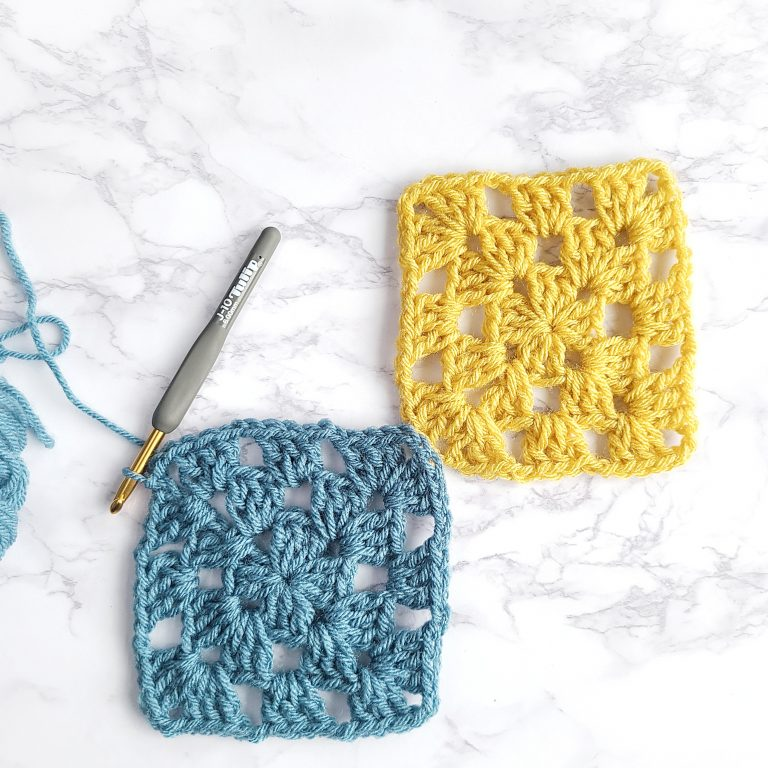The cornerstone of crocheting: The Granny Square. Granny squares are
everywhere, and are one of the first things you learn when crocheting.
They can be designed in many different ways, and are extremely versitale when
it comes to pattern and design. This pattern is a good place to start, and will
help you on your way to becoming a crochet master.
Link: Basic Granny Square Pattern
Coffee Mug Cozy
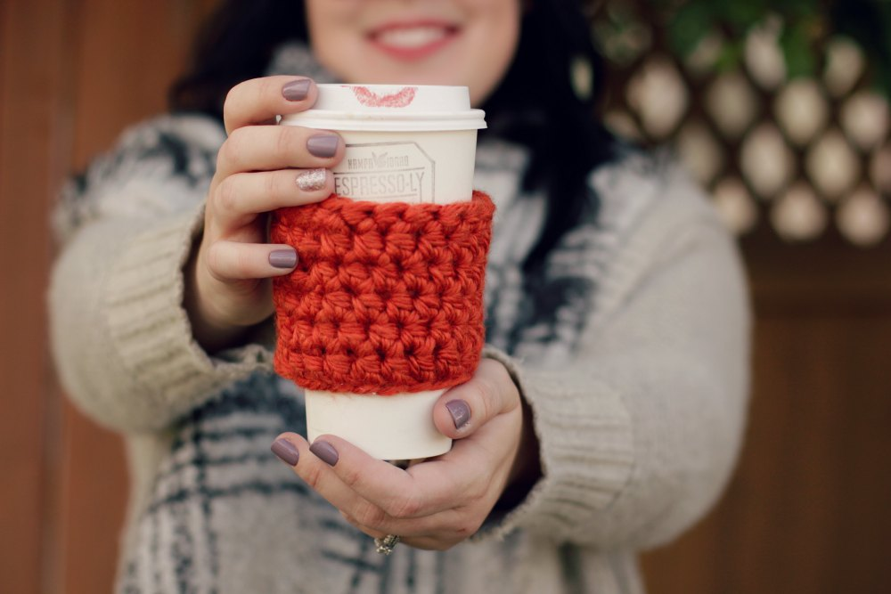If you like your drinks hot but don't want to constantly be burning your hands,
this is the pattern for you. Very easy and basic, you can make one for coffee cups
of any size, and with any yarn weight. This pattern gives tips for starting out,
and allows you to bring your own unique style to the design.
Link: Coffee Cozy Pattern
Fingerless Gloves
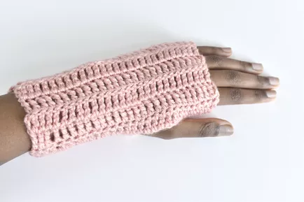When it comes to fingerless gloves it doesn't get easier than this. THis
design is simple to follow, uses only one kind of stitch, and is perfect for
someone just starting out. The only extra material you'll need is a yarn needle
to finish them off.
Link: Fingerless Gloves Pattern
Easy Baby Blanket
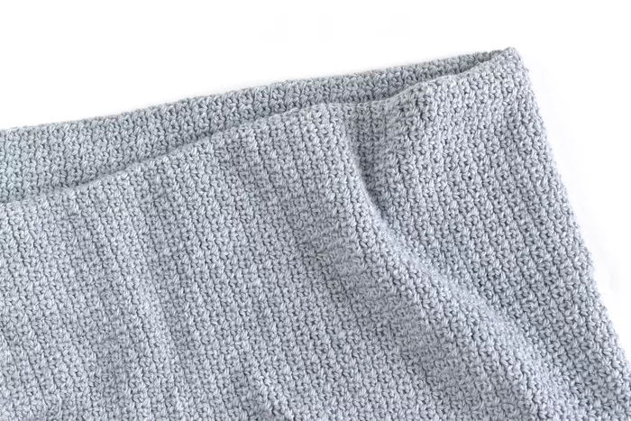This pattern for a baby blanket is simple and easy to follow. The design is
very straightforward and easy to understand. The pattern itself contains plenty
of links in case you are missing a stitch or can't remember something.
Link: Easy Baby Blanket Pattern
Granny Square Tote Bag
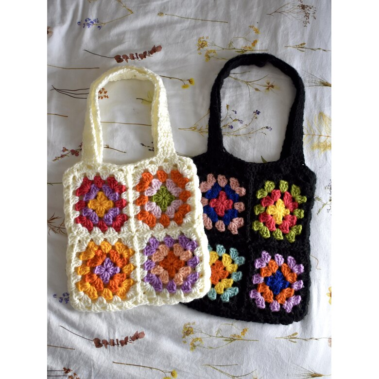This tote bag is a great example of how the granny square can be made into
so many different things. This pattern also comes with suggestions for yarn,
as well as a section at the bottom with similar designs and patterns in case
you're looking for something a little different.
Link: Granny Square Tote Bag Pattern
Textured Sweater
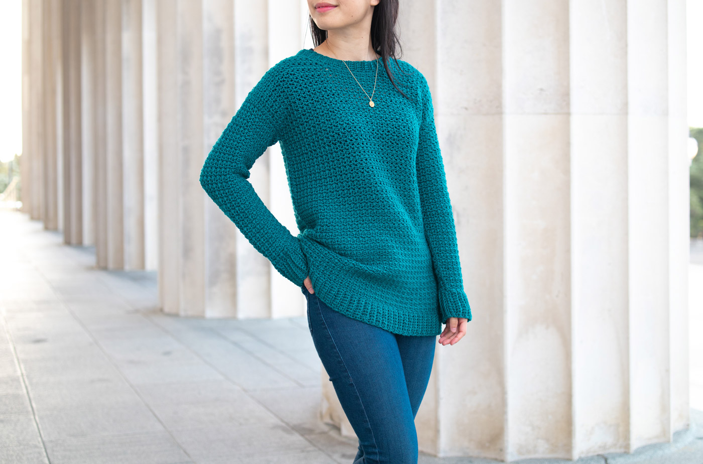This sweater is easy to crochet and looks so cozy to wear. The
pattern is simple to follow, and the creator, Grace, even links
her youtube channel where you can find the tutorial for how to create
this particular design easily by following along.
Link: Textured Sweater Pattern
Vortex Afghan
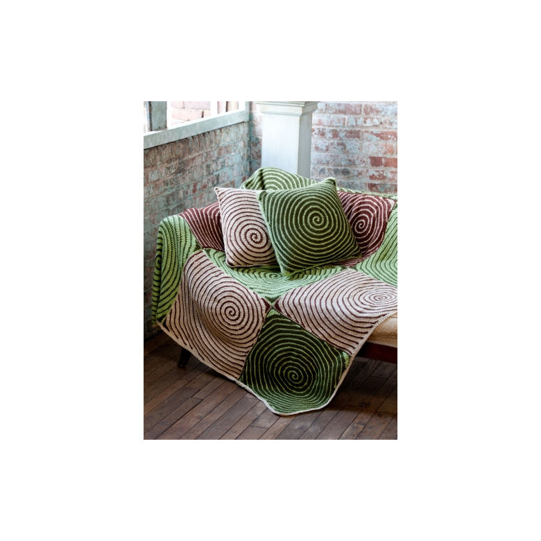This pattern can be used to make squares, much like a granny, in order to work on larger
projects. This vortex design is perfect for blankets, pillow cases, or anything else you
can think of. The pattern is easy to follow, and gives tips for creating bot the blanket design,
and the pillows.
Link: Vortex Afghan Pattern
Skinny Tie
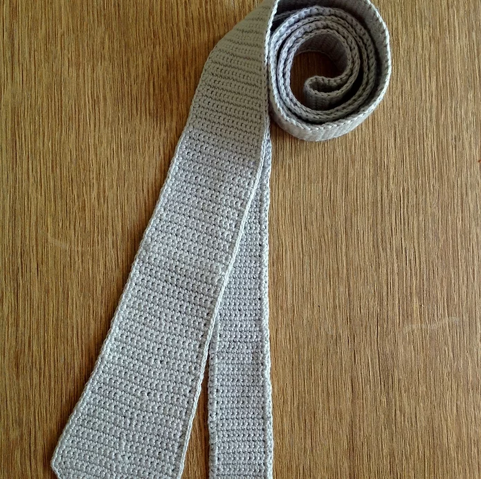A fun, sort of different design, this tie is perfect for anyone who wants a more
unique flair to their neck apparel. The pattern is easy to follow, and gives details
for making the design even better with tips for adding small designs to the overall pattern.
There are a couple of special stitches, but don't worry! There are links to tutorials for those
as well.
Link: Skinny Tie Pattern
Crochet Headband
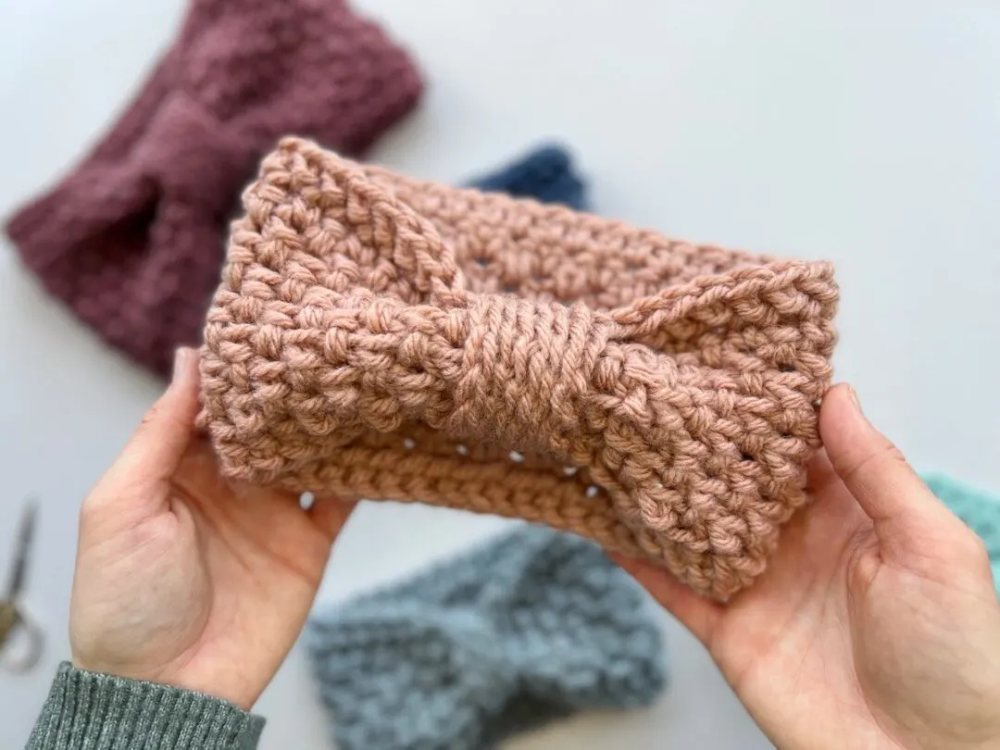This beautiful Heringbone Headband pattern is easier than it looks,
and does not have many special stitches in order to complete. There
is also a comment section in case you want to ask questions to the
pattern designer, Hannah Cross, who runs the site.
Link: Crocheted Headband Pattern
Grandmother's Flower Garden Hexagon Blanket
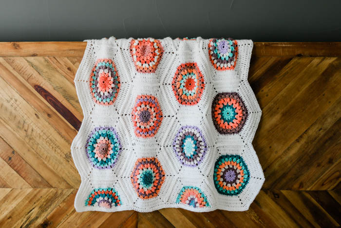If you're tired of blanket designs that are mostly granny squares and simple patterns
then you'll love this blanket that takes the square and makes it a hexagon, and adds
a whole bunch of colors and stitches to make a beautiful flower pattern.
Link: Grandmother's Flower Garden Hexagon Blanket Pattern
Heart Infinity Scarf
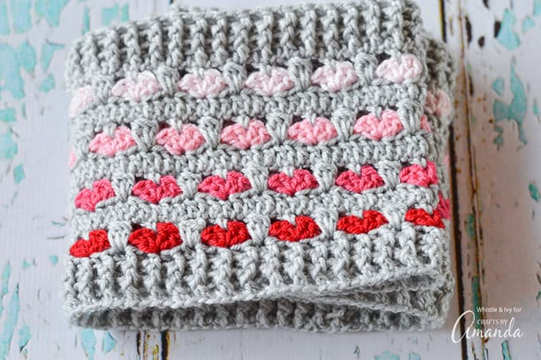This beautiful scarf is perfect for Valentine's Day, or simply
to keep out the cold in the winter. The pattern is easy to follow, and for
any special stitches, there is a link on how to do them. The pattern is available
within the post, and includes pictures of the process so you can follow along.
Link: Heart Infinity Scarf Pattern
Title
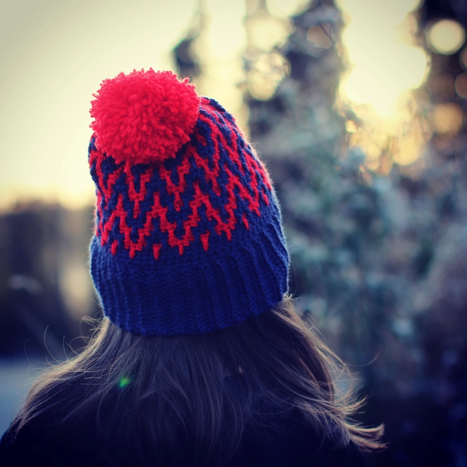Even though the top of the page says this is not a crochet blog this
pattern for a beautiful hat will have you looking at the rest of the limited
patterns offered. This design is simple and elegant, and can be found with
both US and UK crocheting terms for easier understanding.
Link: Up North Hat Pattern
Crocheted Flowers
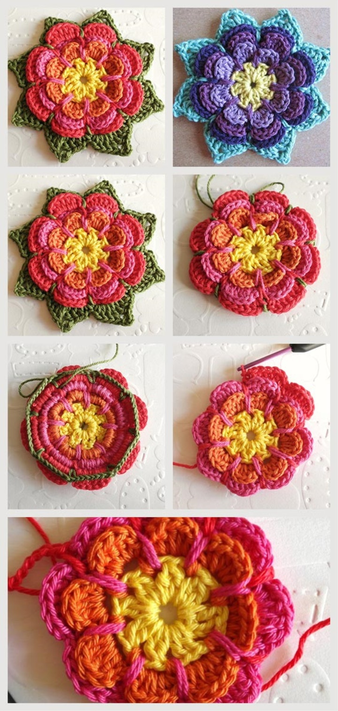If you like to have detailed examples and picture of how to do
certain parts of a design than this is the pattern for you. If you
want to make these beautiful flowers, the pattern is full of pictures
to map your progress, and details to make things easier on you.
Link: Crocheted Flowers Pattern